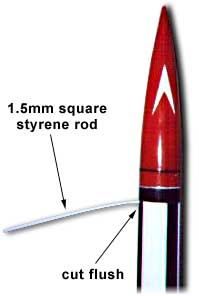
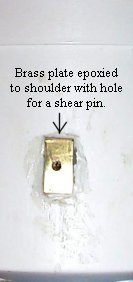

Shear Pin Nose Cone Retention
 |
When a two-stage recovery system is used the main parachute is supposed to deploy at a low altitude. To ensure that accidental deployment does not occur at a high altitude during descent the nose cone must be securly attached to the airframe, but be easily blown off by the ejection charge. A common method has been to friction fit the nose cone in the airframe.
Friction fitting is usually done by wrapping masking tape around the nose cone's shoulder until it fits sufficiently tight. But how tight is "sufficently tight?" And under what weather conditions? If a rockets sits on a pad in the sun the fit might become tighter than desired. Or if the rocket cools the fit may become looser than desired.
|  |
An alternative to friction fitting is a shear pin. The pin keeps the nose cone attached to the airframe until the ejection charge fires, at which time it fractures allowing the nose cone to separate from the airframe.
A shear pin is used by drilling a hole through the airframe into the nose cone. The hole should be placed about 1/2 down the nose cone's shoulder, which is often about 1" to 1.5" below the top of the airframe. During flight preparation the pin is pushed through the airframe and into the nosecone, and then cut off flush with the airframe.
Two types of materials are commonly used for shear pins: #2 nylon screws and square, 1.5mm Styrene rod. Both materials have been successfully used with cardboard, phenolic and fiberglass airframe.
#2 nylon screws can be hard to find. They are sold by McMaster-Carr (www.mcmaster.com) and Small Parts (www.small-parts.com). Styrene rod is widely available at many hobby shops.
Use a 5/64" drill bit to drill the hole through the airframe into the nose cone. Add a drop of CA to a cardboard airframe to harden the hole. Phenolic and fiberglass airframes should work without any reinforcement of the hole.
A minium of two pins is recommended so that the nose cone does not pivot and break a single shear pin before the ejection charge fires. Suggestions pins for airframe diameters are listed below.
- 3" and smaller - 2 pins
- 4" 2-3 pins
- 6" 3-4 pins
The number of pins depends upon the mass and fit of the nose cone.
Ground test and adjust as needed.
Application
This photo (Figure 1) show the 1.5mm square Styrene rod inserted into the
hole before the excess rod has been cut off. Once the rod has been cut
flush with the airframe it is nearly invisible.
Ground testing is recommended to determine if the amount of black powder you are accustomed to using will be sufficient to expel the parachute and break the shear pin. You should be able to grasp the nose cone with your hands and with a sudden pull fracture the pin and pull off the nose cone.
A hole through a cardboard airframe might enlarge after repeated use. A drop of CA or epoxy will harden the cardboard.
 A hole in the shoulder of a plastic nose cone may become elongated, and shear pins may fail to shear but bend. This may not affect recovery system deployment. However the hole in the nose cone will probably continue to grow and eventually become ineffective. A solution is to adhere a brass plate to the nose cone's shoulder as shown in this photo (provided sufficient space exists between the nose cone and airframe). The brass provides a hard and "sharp" surface that will shear nylon screws when the ejection charge fires.
Strips of thin brass 1/4" wide are sold at most hobby stores and some hardware stores. Cut a length 1/2" to 1" long as needed and attach to the nose cone's shoulder. Then align with the hole in the airframe and drill a hole through the brass plate.
Brass plates have been successfully adhered to plastic nose cones by scraping
the nose cone where the plate is to be fastened to give epoxy something to grip.
An epoxy paste like Epoxo88 has worked well.
Submitted by Dean A. Roth